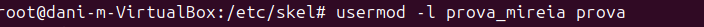
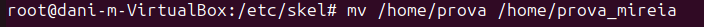
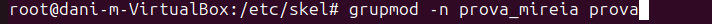
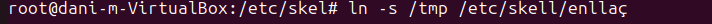

2.Gestió d'usuari i grups i permisos
Cambiar nom d’usuaris usermod -l “nom nou” “nom vell” 
Cambiar nom de una carpeta mv “ruta/nom_carpeta_antiga” ruta/om_carpeta_nova” 
Cambiar el home de un usuari
usermods -d “ruta” “usuari"

Modificar nom d’un grup groupmod -n “nom_nou” “nom_antic” 
Per crear un Soft Link ln -s (ruta 1r Directori) (ruta 2n Directori) 
Estructura de la informació
Estructura física i lògica
L'estructura de la informació es divideix en dues parts:
- Física: Representa el disc (sòlid o mecànic).
- Lògica: Inclou l'estructura GPT o MBR.
La part lògica pot ser consultada mitjançant comandes de terminal, com es mostra a continuació:
gdisk /dev/sda
Blocs i sectors
Els discs estan dividits en blocs, i dins de cada bloc hi ha sectors. Els sectors són la unitat mínima física on es guarden les dades (per defecte 512 bytes). Tot i això, el sistema operatiu treballa amb blocs, que són la unitat mínima lògica.
- Mida del sector: Definida de fàbrica i no modificable.
- Mida del bloc: Es pot canviar quan formatem la partició.
Per consultar la mida dels sectors:
fdisk -l
Per veure la configuració dels blocs:
tune2fs -l /dev/sda | grep Block
Per obtenir informació de les particions i sistemes de fitxers:
df -T
Problemes amb els blocs i solucions
Fragmentació interna
Quan els blocs no s'emplenen completament, es produeix fragmentació interna.
Solució: - Reduir la mida del bloc si es guarden arxius petits (ex. fitxers de text). - Augmentar la mida del bloc si es guarden arxius grans (ex. pel·lícules o ISOs). - Recomanació: Separar diferents tipus d'arxius en particions diferents.
Fragmentació externa
Quan els arxius es guarden en blocs no continus després d'un ús prolongat del disc.
Solució: - Desfragmentar el disc:
e4defrag -c /dev/sda2 # Consulta de fragmentació
e4defrag /dev/sda2 # Desfragmentació
Tipus de formateig
- Ràpid: Elimina el sistema de fitxers, però no els arxius ni repara blocs defectuosos.
- Nivell mig: Elimina el sistema de fitxers i detecta blocs defectuosos sense reparar-los.
- Nivell baix: Borra tots els arxius, elimina el sistema de fitxers i repara blocs defectuosos (més lent).
Creació de particions i formateig
Per accedir al disc:
fdisk /dev/sdb
Assignem la configuració de la partició i confirmem. Per verificar:
fdisk -l
Definir la mida del bloc:
mkfs.ext4 -b 2048 /dev/sdb1
Comprovar la mida:
tune2fs -l /dev/sdb1 | grep Block
Muntatge de particions
Temporal
El muntatge temporal es fa amb la comanda mount. Els arxius creats abans del muntatge no són visibles mentre el disc està muntat, i viceversa.
mount /dev/sdb1 /mnt/particio1
Desmuntar:
umount /mnt/particio1
Permanent
Es configura a l'arxiu /etc/fstab:
/dev/sdb1 /home ext4 defaults 0 0
Compartició de carpetes amb Samba
Configuració inicial
- Canviar l'adaptador de xarxa de la màquina virtual a "pont".
- Instal·lar el client i servidor Samba:
sudo apt install smbclient samba
- Configurar l'arxiu
smb.conf:
sudo nano /etc/samba/smb.conf
Afegir una partició per a l'usuari "platano" i reiniciar Samba:
sudo systemctl restart smbd
- Crear l'usuari "platano" i ajustar permisos:
sudo adduser platano
sudo chown -R nobody:nogroup /mnt/particio
Accedir al recurs compartit
- Des d'una altra màquina, utilitzar:
smbclient //IP_DEL_SERVIDOR/NOM_COMPARTIT
- Accedir al recurs compartit amb el navegador de fitxers.
NTFS
Configurar una partició NTFS:
- Crear la partició:
mkfs.ntfs /dev/sdb2
- Configurar l'arxiu
fstabper al muntatge definitiu:
/dev/sdb2 /mnt/particio2 ntfs defaults,uid=nobody,gid=nogroup 0 0
-
Configurar Samba de manera similar a l'ext4.
-
Comprovar l'accés des de clients Linux i Windows.